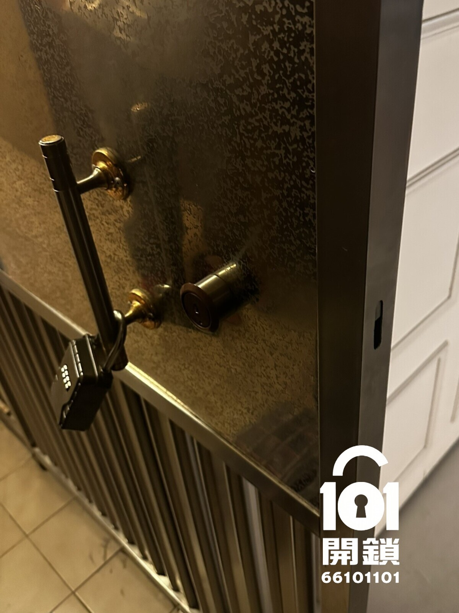

灣仔區・跑馬地・電子鎖
跑馬地開鎖服務案例｜電子鎖處理記錄
客人回家時電子鎖完全無反應，後備匙亦放在屋內。 客人透過WhatsApp提供門鎖相片和所在地區後，101開鎖先按鎖種及情況初步報價，再安排師傅上門處理。
即撥 66 101 101WhatsApp 查詢
客人搵開鎖原因
客人回家時電子鎖完全無反應，後備匙亦放在屋內。 由於現場門鎖已經影響正常出入，客人不希望自行撬門或強行扭匙，避免令鎖膽、門框或電子零件進一步損壞，因此聯絡101開鎖安排師傅到場。
客人主要顧慮
電子鎖個案最怕主板、電池倉或鎖體同時出問題。客人往往不知道是無電、面板失靈還是鎖舌卡死，因此師傅會先按品牌、燈號、聲響和後備匙狀態判斷，避免盲目拆機。
到場檢查與處理方法
師傅先確認品牌和供電方式，使用外置供電及後備開啟程序處理，開門後即時檢查電池倉。 處理期間師傅會盡量避免破壞原有門身和鎖具；若發現鎖膽或鎖體已經嚴重磨損，會先向客人解釋原因和更換選項，得到同意後才繼續。
完成後測試
開門後，師傅會反覆測試開門、關門、上鎖、反鎖和原鎖匙操作，確認門鎖可以正常使用。若現場需要更換鎖膽，會同時測試新匙、門框咬合和鎖舌回彈，確保客人離開或休息時可以安全鎖門。
101開鎖保養建議
電子鎖應定期更換高品質鹼性電池，避免混用新舊電池。如曾經出現低電提示，不應拖延太久，否則可能令電池漏液或鎖體無法啟動。